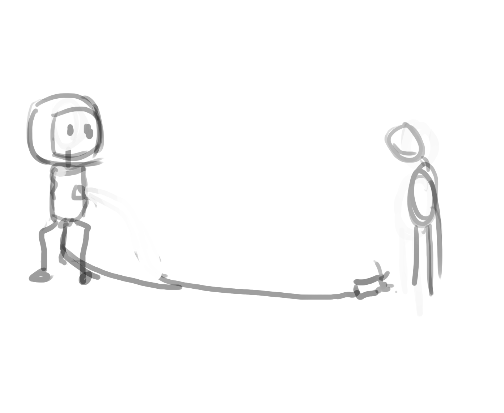

FINAL PROJECT PROPOSAL
subverting the binary between humans and computers.
As far back as the west’s ultimate canons, in the time of Plato and Aristotle, humanity’s key distinguishing feature which raised us up out from the dirt and savagery of the animal kingdom was our capacity to reason. 1 However as computers have increasingly proven their superiority in domains of logic philosophers have been forced to adopt more romantic definitions of humanity which emphasize our emotional capacity and spontaneity in contrast to computers’ supposed cold, abstract, rigid logic.2 I feel that these newer definitions of human have created a false binary between humans and computers which problematically relegate digital computers to being understood and used only as computational tools rather than as potentially organic, complex, creative and autonomous systems. I’ll be offering a few examples throughout different periods of time which hopefully serve to undercut and subvert this false and harmful binary.
Vera Molnár, a French artist working primarily between the 1950-80’s was particularly interested in the relationship between order and chaos.3 She used computers and plotters to explore this in her work to draw geometric shapes in accordance to algorithms that were altered by random noise. Three recurring motifs that appear in her work are the grid, square and noise: in a series of work title “(Dés)Orders” Molnár divides her canvas into a grid, each cell contains several squares which are each altered with random noise in respect to their scale and shape. When looking at the aesthetic effect of one cell Molnár’s procedures may appear laughable in simplicity and effect, but when cells are viewed within the context of the grid an interplay between order and chaos is created and her work becomes conceptually and aesthetically meaningful. Despite the fact that the base units of Molnár’s work remain abstract, non-representational lines in the form of geometric shapes we find that in-between the impersonal order of the grid and the total chaos of noise a certain ordered unpredictability emerges which appears organic.4
Ultimately Molnár’s work is algorithmic, meaning that it has a clear input: numbers derived from random noise; and a clear output: minimalist geometric representations of those numbers. This means that the computer remains totally dependant on its creator for its continued functioning making Molnár’s computer programs more of a tool than an existence. So while Molnár’s algorithmic art may subvert important aesthetic binaries between human and computer, it does not address more fundamental underlying assumptions which assume computers’ total and continued dependence the creator/user. Also, her work does not subvert more fundamental non-aesthetic considerations of organic-ness which focuses on the logical flow of programs; algorithms are not systematically organic even if you input random noise because the flow of the underlying program remains blatantly logical, static and dead— any “chaos” or unpredictability apparent in the final product was introduced outside the program itself.
One of the oldest, classic examples which showed that computer programs could be relatively unpredictable and autonomous of human input, despite absolute knowledge of all starting conditions was Conway’s Game of Life created in 1970. It was a simulation which consisted of a two-dimensional grid in which each cell could be either “alive” or “dead”, during every step of the sim cells would die, subsist or be born depending on the number alive/dead adjacent cells. Despite these incredibly simple rules because these systems weren’t encapsulated but instead were allowed to interact with one another complex emergent behavior could be found within the Game of Life. Arrangements of cells which were self perpetuating5 and self replicating6 could evolve, complex calculations could be performed7 (for instance clocks have been created within the game8), and it has remained impossible to predict whether any given starting condition will result in infinite loops, extinction, or a seemingly infinite sim of life, death and complexity.9 It is the complexity and thus unpredictability which emerges from the interactions between cells governed by individually simple rules all without need for human interference which further and more fundamentally subverts binaries which relegate digital computers to adjectives like rigid, dependant, or dead.
Often when trying to pinpoint feelings pertaining to the lifelessness of computers people will call attention to the decidedly quantized nature of digital computer-programs. In Conway’s Game of Life playspace is divided into a discrete grid and the passing of time is represented by discrete steps in the simulation. In many contemporary video games players are accustomed to interacting with state-based AI’s in which behaviors are compartmentalized and NPC’s can only perform one state (or behavior) at a given time (talking, fleeing, fighting, searching…).10 11 Often the evident quantization within computer-programs and applications are attributed to the more fundamental physical quantization of the computer itself: that is that the computer’s basic building block, the transistor, is itself quantized— either on or off. This idea is often taken as a testament to some essential difference which separates humans and computers— enforcing the binary. However, this rationalization ignores that human biology is equally quantized: our base unit of thought, the neuron, is also effectively (in terms of its effects on the larger system) quantized— either transmitting a charge or not, either on or off; similarly our DNA consists of the various rearrangements of two pairs of nitrogenous bases (adenine-thymine, guanine-cytosine)— in other words a binary code. It is only a result of the awesome complexity and scale of biological systems that these many tiny quantizations on fundamental scales become aesthetically invisible on macro scales. The basic point is that there exist no fundamental essential differences between computers and humans, perceived differences are simply a result of different arrangements of functionally identical building blocks within computers and humans. But because digital computers can be rearranged (reprogrammed) so easily and quickly computers have the potential of increasingly thinking, evolving and just aesthetically feeling more and more like us and other organic organisms— that is, if we want them to, and if we’re clever (and philosophically open) enough to do so.
More contemporary advents in computer science and programming have shown that we do have the necessary will and brains to make computers function more and more like us. Genetic algorithms and neural networks are examples of types of programs that adapt models of evolution and thought found in biology. These biologically inspired programs have become increasingly popular as they have proven to be more flexible, complex, independent and therefore often more powerful than previous paradigms using traditional dependant, state-based approaches which enforce this binary between human and computers. 12
In this age of networked culture websites have become one of the most common ways in which humans explicitly and visibly interact with digital computers yet most websites’ goal is only human to human communication. I visit a blog, the author has something they want to communicate to me, the user, and the job of the webpage is to facilitate the most direct and efficient form of communication possible— usually by becoming as invisible as possible. When we use a scroll bar to travel down the contents of a page we expect a one-directional line of communication from the user to the webpage which will allow us to seamlessly absorb the content of another human. In other words, the environment of the typical webpage is in many ways the epitome of this problematic binary in which computers become totally objectified, agentless, rigid tools for humans. Obviously, this is not always a bad thing, but because of the ubiquity of these environments in day to day internet surfing it becomes problematic as these relationships between human and computers often are assumed as essential realities. I would like to address this problematic for my final project.
For this reason, I am choosing to make a program which will feature an array of many heads on a screen, all of whom will have independent goals of wanting to listen to others and be heard. Each head has their own personal vertical and horizontal scroll bars which control the orientation of their heads. To effectively listen to and talk to others each head will be able to control these scroll bars to control their orientation. A human visiting the website can observe these agents starting and stopping conversations and will be able to manually manipulate scroll bars, thus orientations, but the heads will immediately retake control once the human has finished impeding them. In this program, behaviour is not encapsulated into states and will therefore hopefully feel unpredictable and aesthetically organic. Agents each have their own desires and values and can control their own scroll bars and therefore will be autonomous and independent of user input, while still being able to be affected by a user to show that the scroll bars really are html elements and that the simulation is not simply an animation. Hopefully this program will serve to subvert the problematic binary that has developed between human and computers in one of its most common breeding environments— the webpage.